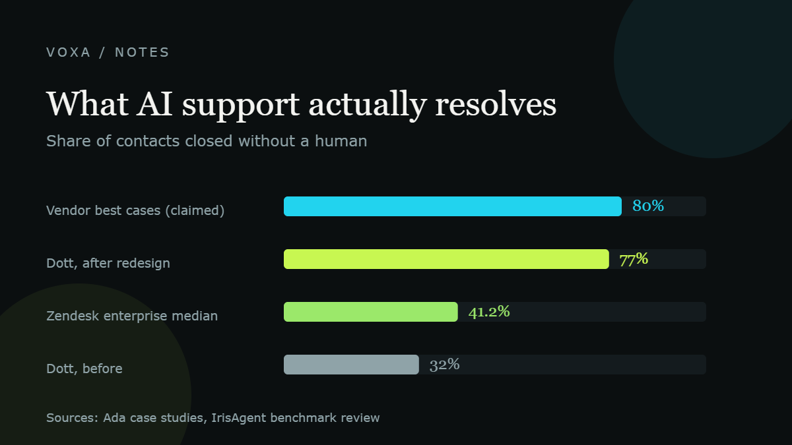

What AI actually changed at work: before and after, in numbers
Real before-and-after figures from a company that moved most of its support to AI, plus what happened when it went too far and hired people back.
Read the note →Notes are shorter than the guides. Every note covers one thing AI or automation changed, with the company numbers and the original sources linked at the bottom. No affiliate links, no sponsored rankings.
Real before-and-after figures from a company that moved most of its support to AI, plus what happened when it went too far and hired people back.
Read the note →
US layoffs attributed to AI are at record highs, but total job cuts fell 41%. The real damage is at the bottom of the ladder, for workers aged 22 to 25. Here is the data.
Read the note →
Case studies from Europe and the US: automated resolution rates from 32% to 77%, CSAT and ROI figures, and the reason most AI support rollouts get reversed.
Read the note →
What the freelance market pays for AI skills in 2026, what automation retainers go for, and why generic AI content is getting cheaper while implementation gets paid more.
Read the note →Tell us the job, the tool or the country you want us to look at. Reader questions decide what gets written next.
Send us a note →